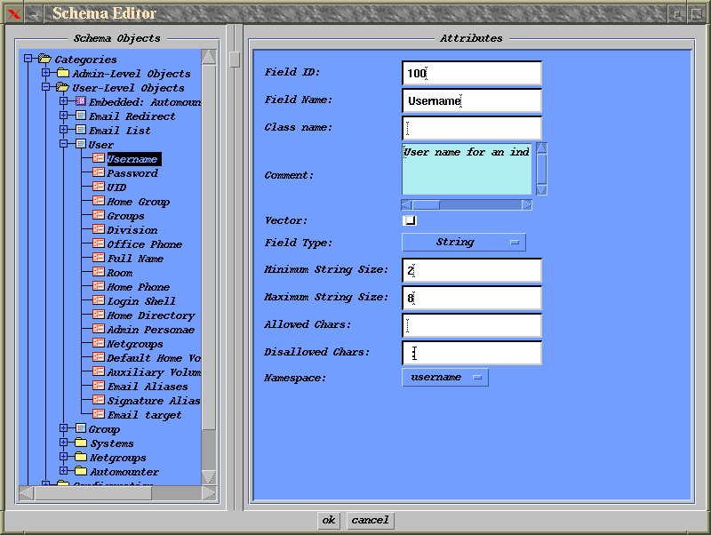
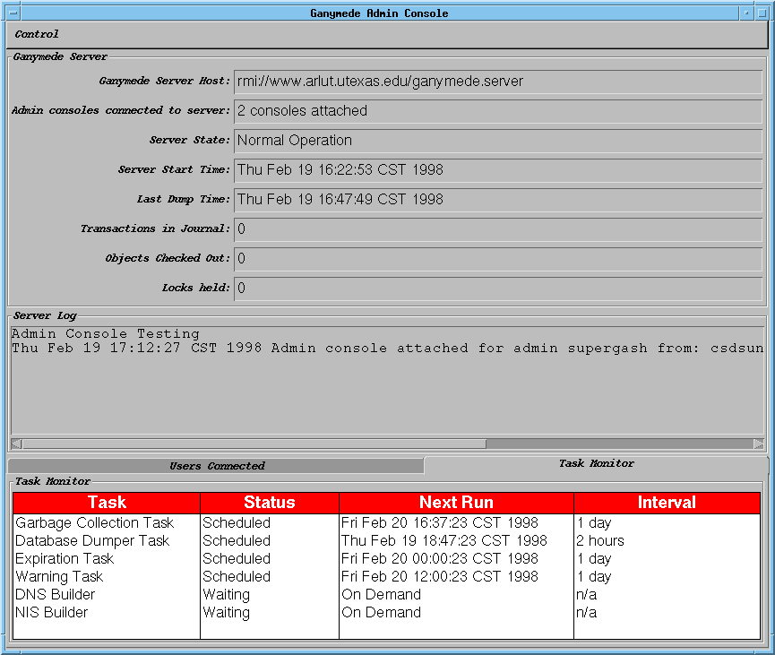

The Ganymede server has many advantages over the GASH project, including a graphical user interface, support for automated clients, and support for concurrent users. The biggest advantage, however, is that the Ganymede server is totally customizable through the authoring of custom classes and the visual editing of the Ganymede server's database schema.
The Ganymede Admin console has as one of its primary functions the ability to edit the Ganymede Database Schema. You can access the schema editor when running the admin console as supergash. You will then see a window pop up that will look something like the following:

By clicking the right mouse button in the tree on the left of the schema editor window, you can create new object types, add, change or remove field definitions, and specify general parameters for field definitions. You can also associate custom code modules with particular object types in the database.
You can look at the schema source code included in developer release 3 to see examples of custom plug-in objects to manage objects in the server.
In order to have the server recognize plug-ins, you need to:
You may wish to consult the following javadoc's for details on the DBEditObject base class that is subclassed to provide object intelligence on the server.
We are also developing a guide to DBEditObject subclass construction here.
Finally, the server supports the authoring of custom tasks that can be run at regular intervals or on demand when a user commits a transaction in the database.

Again, you may wish to consult the javadoc's for documentation on the base class for all plug-in tasks on the server. Currently, all plug-in tasks are run whenever a transaction is committed by a user. In the future we will make it easier to plug-in custom tasks to be run at arbitrary times by the server.